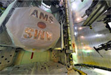

Google предложила пользователям завещать аккаунты на случай смерти
Корпорация Google запустила функцию, позволяющую пользователям решить, что произойдет с их аккаунтами и данными после смерти. О нововедении сообщается в официальном блоге компании.
В настройках аккаунта пользователь сможет выбрать, какие данные (например, фото, контакты или видео из YouTube) перейдут под контроль доверенного лица. Google также может пересылать письма, поступающие на электронную почту пользователя, доверенному лицу или автоматически отвечать на них. Во втором случае текст письма должен ввести сам «завещатель».
При желании пользователь может указать, что все его данные должны быть удалены после смерти. При настройке функции он должен указать, через сколько месяцев (три, шесть, девять или двенадцать) нулевой активности корпорации следует считать его умершим. В любом случае, Google сначала попытается связаться с владельцем аккаунта по СМС и запасному адресу электронной почты, и только потом исполнит его волю.
Google — первая из крупных интернет-компаний, официально запустившая подобную функцию. Вместе с тем, в соцсети Facebook существуют специальные приложения, созданные сторонними разработчиками, которые позволяют оставить посмертные сообщения друзьям. Для пользователей Twitter, в свою очередь, существует сервис, который будет твитить от их лица после смерти.
-

Охота на вимпа
Опубликованы первые результаты эксперимента по поиску темной материи на МКС
-
Дешево и очень сердито
США отправят в Персидский залив боевой лазер
-
Запах большой химии
Россия выбилась из графика уничтожения химоружия